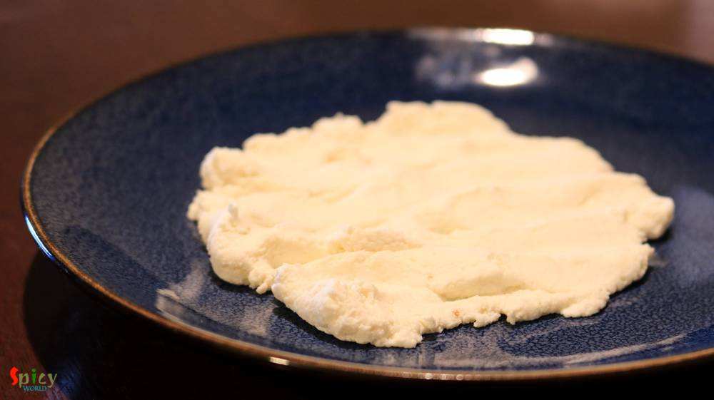
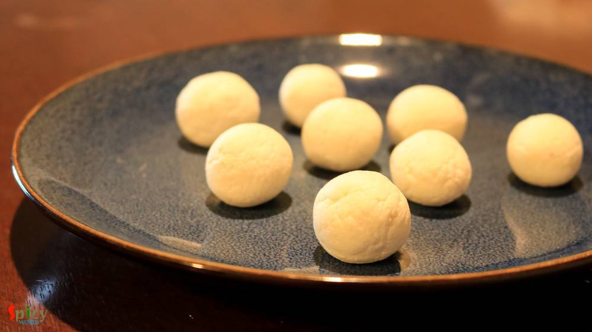
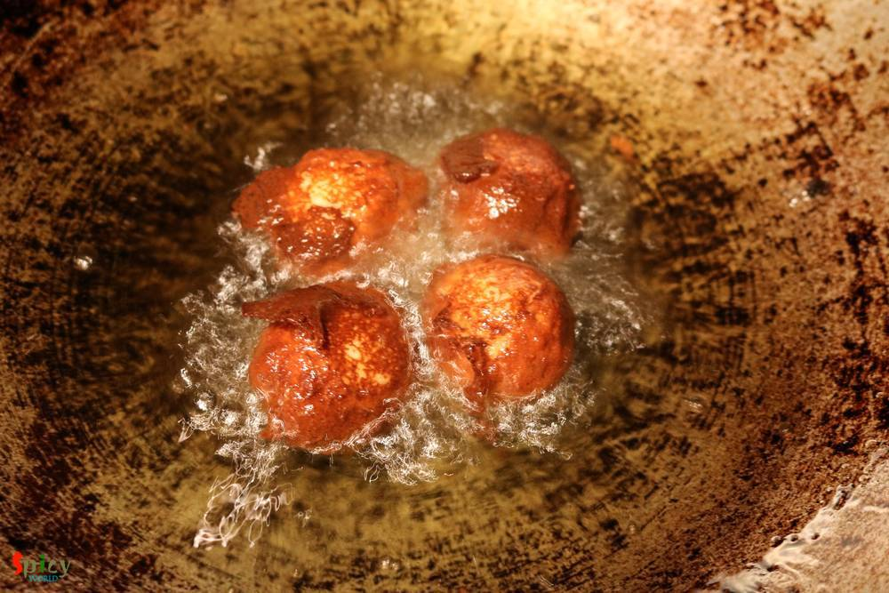
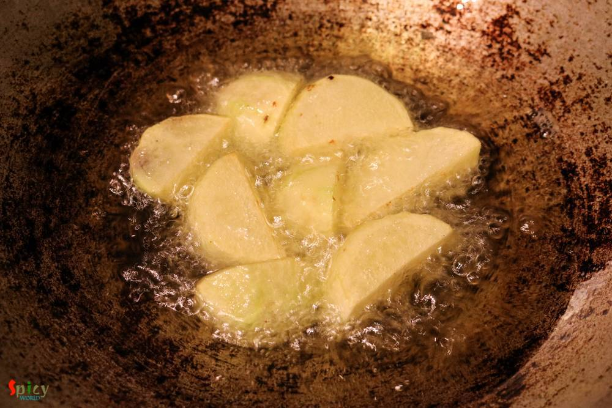
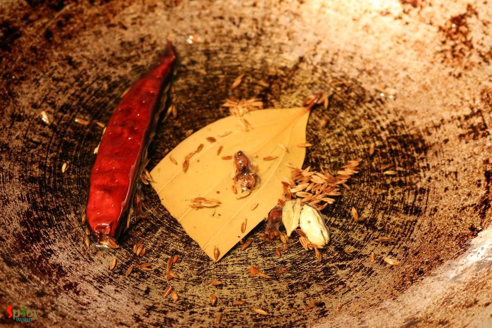
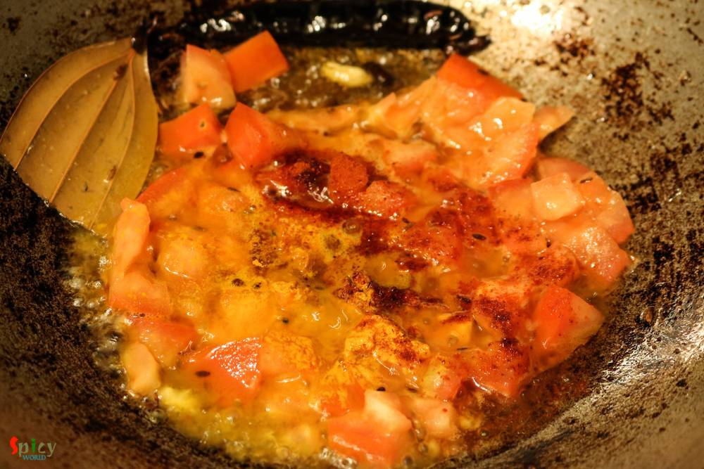
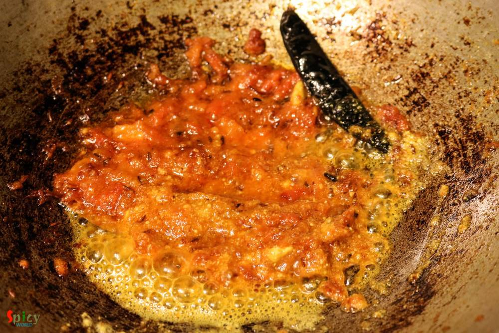
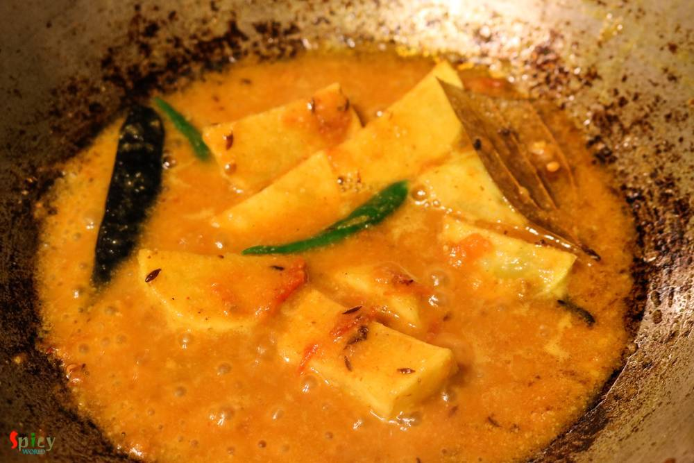
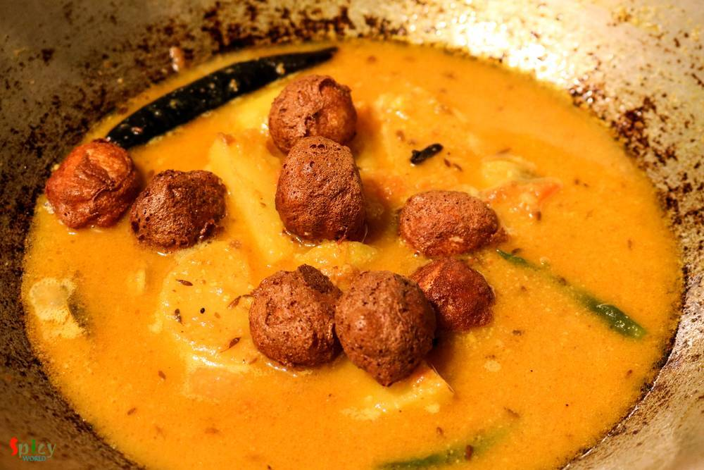
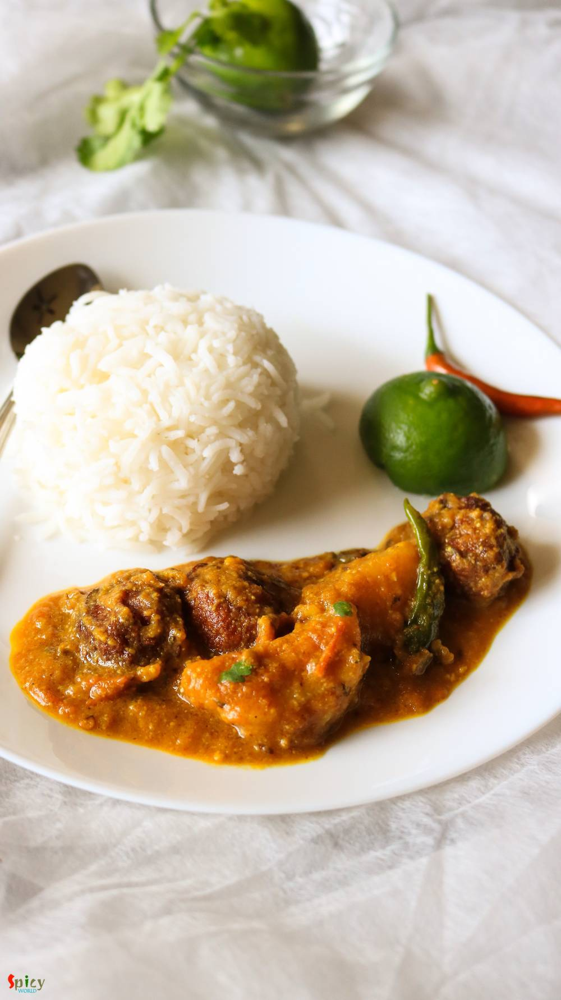

Simple and Easy Recipes
Curry of Cheese Balls / Chanar Kalia
© 2016 Spicy World, Published on: May 19, 2016
If your milk gets curdled, don't throw away, you can do a lot with it. Well, it's bengali style 'chanar kalia' where plain curdled milk / cheese balls are first deep fried and then cooked in a tomato based gravy. It's a vegetarian delicacy of Bengali cuisine. The dish tastes awesome and goes best with plain basmati rice. In any puja or special occasion, we make this dish and it always becomes the attraction of the entire menu. I made this dish yesterday on lunch for the first time in my life and I pretty much nailed it. Try this easy recipe in your kitchen and enjoy with your family.

Ingredients
- 200 gm of curdled milk / chana.
- 1/4 th Teaspoon of maida / all purpose flour.
- 1 tomato, finely chopped.
- 2 Tablespoons of cashew paste.
- 2 Tablespoons of sugar.
- 1 Teaspoon of ginger paste.
- 3 green chilies.
- Whole spices (1 Teaspoon of cumin seeds, 1 dry red chilli, 1 bay leaf, 2 green cardamom, 3 cloves).
- Salt.
- Half cup of white oil.
- 1 Teaspoon of turmeric powder.
- 1 Teaspoon of hot red chilli powder.
- 1 Teaspoon of roasted cumin and coriander powder.
- Pinch of garam masala powder.
- 1 Teaspoon of ghee.
- 1 potato, cut into cubes.


Steps
Put the chana / curdled milk in a cheese cloth and hang it for 2 hours.
Squeeze as much water from chana as possible. But do not make it too dry.
Now place it on a plate with the flour and pinch of salt.
Mix and mash everything with your hand well for 3 minutes.
Then make medium / small size balls out of it.
Heat oil in a kadai and drop them gently in hot oil.
Fry them till golden in colour.
In the same oil lightly fry the potato cubes, then keep aside.
Keep 3 Tablespoons of oil in that kadai and remove the excess oil.
Add all the whole spices and sugar in medium hot oil. Saute them until the sugar becomes golden.
Then add ginger paste, chopped tomatoes, salt, turmeric powder and red chilli powder. Mix well and cook for 7 minutes in medium flame.
Add the cashew paste and roasted cumin, coriander powder. Mix well for few minutes.
Add half cup of warm water, fried potatoes and green chilies. Cook until the potatoes become soft.
Lastly add those fried chana balls, garam masala powder, ghee and little more warm water. Mix gently and simmer for 3 - 4 minutes, then turn off the heat.
Let it rest for a minute and then serve immediately.
Your chanar kalia is ready ...
Enjoy this hot with plain rice ...
")